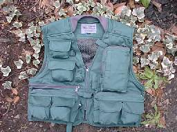

私のお気に入り
釣りの衣類 デクーン フライベスト
1998年頃から、フライベストは「デクーン」社製のベストを使っています。今では販売が終わっているようで、残念です。

○気に入っているところ
- 生地の質感、色合い（カーキですが）、デザイン、そして縫製。この質感とか風合いといったものが結構購入時の判断を左右しますね。
- 肩部のパッド、衿のニット部分。雨具・弁当持ちなど、ベストに収納する重量が大きくなる釣りには、これらの処理が大いに効果を発揮しています。
- 左胸の大型ポケット。アルミ製のフライボックスが２つ入る大きさで、助かっています。
- 左胸のティペット用２連ポケット。最初は見かけだけかと思いましたが、使っているうちにとても便利なことがわかりました。ティペットの先を出しておいて必要なだけ引っぱり出す、といったズボラな使い方もしています。（本来そういうものか？）
- 左右腰部分外側の大型ポケット。必要な大きさと深さがあり、厚めのタックルケースなど十分収容できます。
- 右胸のボトルポケット等、各形状のポケット構成。フロータント、フレキシライト、等を入れるのに便利です。
- 内張りのメッシュ。夏は蒸れるのでこれが助かります。
- 価格。7800円！ はっきり言って、これは安いと思います。費用対効果がとても大きいので絶賛します。
○改良して欲しいところ（デクーンさんに宛てたメールから）
- フラップ型ポケットのポケット側ベルクロの位置・サイズ。フラップ型ポケットには、リーダーウォレットやらかなり厚い小物を入れることがあります。こうした場合、フラップが上側に引かれるので、ポケット側のベルクロ（マジックテープ）にフラップ裏面のベルクロが届かなくなります。ですから、ポケット側のベルクロを縦長に大きくして、確実に閉じられるようにしてください。昨日薮漕ぎの時に小物を落としてしまいました。（その後発見しましたが）
- サングラスポケットの形状。左胸内側のサングラスポケットは便利ですが、やや小さいと思います。できればレイバンのハードケースが入るぐらい大きいとうれしいです。以前、裸でサングラスを入れていたら、転倒した際に割ったことがあり、それ以来ケースに入れて携帯するようにしています。それと、開口部の形状を上部に変更してください。現在は、横面全部で開口するのですが、ベルクロを開くのに結構手間と力がいります。
- 右胸の上から２段目のポケットの大型化。このポケットがもう一回り大きいと助かります。リーダーウォレットを入れるといっぱいいっぱいです。
- 右胸内側のカメラポケットの仕様変更。カメラはよく使うので、右胸外側に移設し、上記右胸２段目ポケットと交代して欲しい。こうした場合、カメラポケットの上部開口部はファスナーが望ましいです。
- 背面ファスナーポケット開口部の大型化。背面のポケットは便利ですが、若干開口部が小さく、出し入れに不便なので、背面の幅いっぱいに開口するといいなぁと思います。
- サイズ。私は身長169センチの中肉ですが（やや拡張中）、サイズはＬＬを購入しました。フライベストの場合、物をたくさん詰め込む上に、冬場は厚着した上に着込みますので、もう少し大きめの採寸でも良いかナという気がします。
私のお気に入り 目次へ
サイトマップ
ホームへ
お問い合わせ